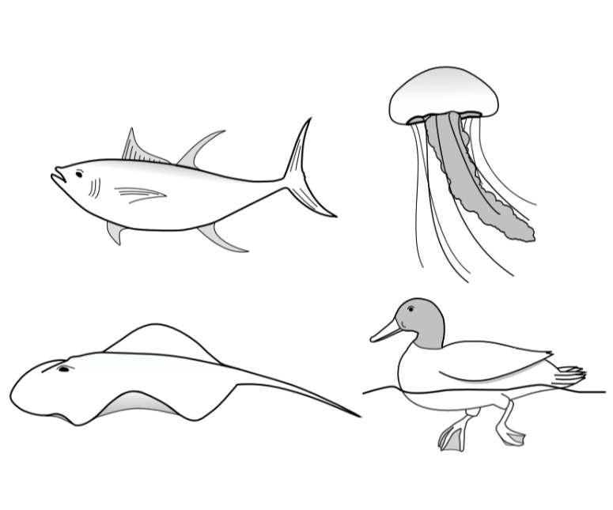

T. Van Buren, D. Floryan, and A. J. Smits, in Bio-inspired Structures and Design, editors L. Daniel and W. Soboyejo, Cambridge University Press, 2019
arXiv: 1801.09714
This book chapter overviews bio-inspired underwater propulsion as part of a book on bio-inspired design.
Here we present a general overview of bio-inspired propulsion. We identify the major types of aquatic swimmers (oscillatory, undulatory, pulsatile, and drag-based) and break down their mechanisms for thrust production (drag-based, lift-based, added mass, and momentum injection). For each swimmer, we: (1) discuss wake characteristics; (2) derive expressions for thrust and efficiency; and (3) design a specific bio-inspired aquatic vehicle concept. This document will be a book chapter.